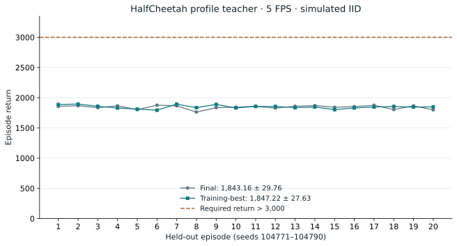
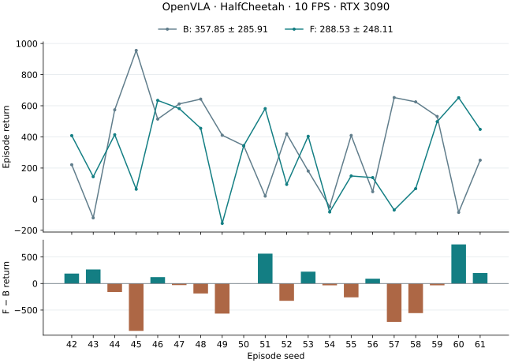
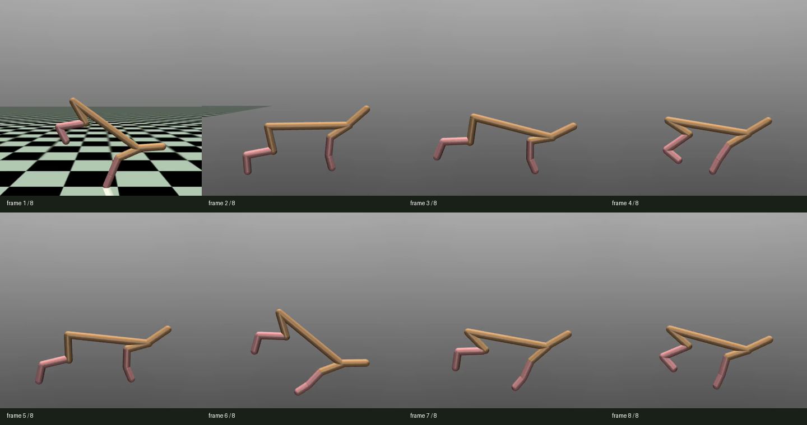
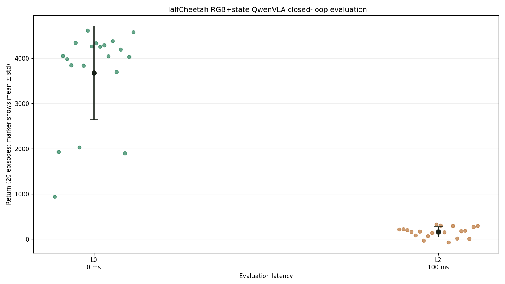

Results / final report
Results at a glance
OpenVLA completed measured real-time evaluation. GR00T and Pi0.5 stopped after their profile teachers failed the demonstration-quality gate; their profile-VLA results are not available.
| Model | B · zero-trained | F · profile-trained | Mean gain |
|---|---|---|---|
| Pi0.5Scientific stop | -347.44 ± 82.66 | — | — |
| GR00TScientific stop | -262.47 ± 74.94 | — | — |
| OpenVLACompleted | 357.85 ± 285.91 | 288.53 ± 248.11 | -69.32-19.37% |
Return = mean ± population SD. B/F evaluate zero-trained/profile-trained VLAs with measured inference latency. These are within-model comparisons from one training run, not a controlled architecture ranking: clocks, recipes and realized latency distributions differ.
Machine-readable results · Models and data index · All environments
Mean gain = F − B; percentage = (F − B) / B × 100%. An unavailable F has no gain estimate.
Pi0.5 / QwenPI_v3 · H1 · 5 FPS
Pi0.5: profile teacher quality gate stop
The zero-latency model, latency profiling and 20-episode measured baseline are complete. Both profile-teacher candidates had zero eligible episodes out of 20 under the strict return >3000 gate. Profile demonstrations, profile-VLA training and F evaluation were not run.
| Stage | Return |
|---|---|
| L0 teacher | 5,414.26 ± 740.00 |
| L0 VLA | 5,357.98 ± 736.99 |
| Measured baseline · B | -347.44 ± 82.66 |
| Profile teacher · E10 | — |
| Profile VLA · F | — |
Training and data
QwenPI_v3, 5000 updates, seed 42, global batch 128 = micro 64 × accumulation 1 × 2 GPUs; GC off, ZeRO-2; train-only state min-max applied once. Fresh profile APPO seed 2222, original 10M target, actual 10002432 frames / step 19536; selected Final.
L0: original 100 APPO H1 episodes, 90/10 split, 90000/10000 rows; clock/prompt metadata20→5 FPS. Strict profile gate>3000: 0/20 for both candidates; no profile data.
Evaluation protocol
H1; RGB224 + native continuous state/actions; env/obs 5/5 FPS; L0 simulated zero latency and B RTX 3090 measured-only CUDA-synchronized latency, one worker; L0/B n=20, seeds 42–61, cap 1000; F not run. P: 5×10 episodes, seeds 42–51 each session, cap 900, no FPS calibration. State 17/action 6. Teacher selection n=20 per candidate, seeds 104771–104790. Historical L0 teacher n=10 at 20 FPS, seed 2222. P additionally uses a 60 s sampling wall-time cap excluding reset/init/warmup; 100 warmup samples per session, 500 total, excluded from canonical latency samples.
Selected Final selection20: 1889.53 ± 44.32; training-best tied. Selection20 is not substituted for absent E10. The B result is verified from episode summaries rather than a full-step trace audit.
Models, data and evaluation evidence
Model 01 / GR00T · H1 · 5 FPS
GR00T: teacher gate failed
The fresh APPO teacher completed the agreed 10M-step budget. Final and training-best checkpoints each produced 0/20 episodes above 3,000. Training-best was selected by mean return, but it could not qualify for demonstration collection. E10, the 12-attempt probe, profile data collection, profile VLA training and F were not run.
| Checkpoint / stage | Execution | Episodes | Return mean ± SD | Mean raw steps |
|---|---|---|---|---|
| Zero VLA · L0 | Simulated, zero latency | 20 | 5,012.47 ± 742.29 | 1,000.00 |
| Zero VLA · B | 3090 real-time, measured | 20 | -262.47 ± 74.94 | 1,000.00 |
| Profile teacher · E | Not run — teacher gate failed | — | — | — |
| Profile VLA · F | Not run — teacher gate failed | — | — | — |
B20 completed with its recovery audited. There is no GR00T B/F comparison for this stopped profile branch. The return threshold applies to teacher data eligibility; it is not a new VLA acceptance threshold. A full 1,000-step HalfCheetah episode does not by itself establish successful locomotion.
B used seeds 42–61, a 1,000-step cap and measured-only latency on RTX 3090. Mean episode latency was 109.17 ms, with 0 observation drops, action drops or invalid actions; mean raw-step clock interval was 200.000701 ms.
Recovery provenance: the container restarted at 20:44 UTC. Complete raw records for seeds 42–57 were retained and their core metrics reconstructed using the frozen metric implementation. Only seeds 58–61 were then evaluated, after a new warmup, with the original model, config and seeds. P and the first 16 completed episodes were not repeated. Some aggregate metadata for those 16 episodes, including actual_env_fps and end-drain counters, were lost and remain explicitly unavailable. They were not estimated. The original and resumed trace segments and ID-remapping manifest remain preserved.
All 20 baseline seeds and recovery segments
| Seed | B return | Steps | Evidence segment |
|---|---|---|---|
| 42 | -295.95 | 1,000 | Recovered from complete pre-restart records |
| 43 | -316.82 | 1,000 | Recovered from complete pre-restart records |
| 44 | -230.33 | 1,000 | Recovered from complete pre-restart records |
| 45 | -194.12 | 1,000 | Recovered from complete pre-restart records |
| 46 | -301.67 | 1,000 | Recovered from complete pre-restart records |
| 47 | -194.47 | 1,000 | Recovered from complete pre-restart records |
| 48 | -166.75 | 1,000 | Recovered from complete pre-restart records |
| 49 | -299.41 | 1,000 | Recovered from complete pre-restart records |
| 50 | -192.73 | 1,000 | Recovered from complete pre-restart records |
| 51 | -202.28 | 1,000 | Recovered from complete pre-restart records |
| 52 | -345.76 | 1,000 | Recovered from complete pre-restart records |
| 53 | -171.68 | 1,000 | Recovered from complete pre-restart records |
| 54 | -303.14 | 1,000 | Recovered from complete pre-restart records |
| 55 | -240.61 | 1,000 | Recovered from complete pre-restart records |
| 56 | -167.83 | 1,000 | Recovered from complete pre-restart records |
| 57 | -355.55 | 1,000 | Recovered from complete pre-restart records |
| 58 | -359.34 | 1,000 | Evaluated after restart |
| 59 | -379.19 | 1,000 | Evaluated after restart |
| 60 | -364.37 | 1,000 | Evaluated after restart |
| 61 | -167.34 | 1,000 | Evaluated after restart |
Compact results · Teacher selection · Fixed model and evidence revisions
Latency, observations and execution
| Metric | B | F |
|---|---|---|
| Mean of episode latency means (ms) | 109.17 | Not run |
| Mean raw steps | 1,000.00 | Not run |
| Dropped observations | 0 | Not run |
| Dropped actions | 0 | Not run |
| Invalid actions | 0 | Not run |
Teacher Final and training-best were each evaluated on 20 selection episodes. The separate E10 was not run because neither candidate passed the data gate; selection results are preserved below and are not substituted for E10.
Teacher / checkpoint selection
Both candidates remain below the data gate
Both candidates use the same 20 deterministic held-out seeds, 104771–104790, a 1,000-step cap, the measured RTX 3090 profile sampled as IID latency, and one simulated worker. The 40,000 step records were checked for contiguous indices, reward sums, timing, seeds and invalid actions. All 40 episodes reached 1,000 steps, with zero invalid or dropped actions.


All 20 teacher-selection seeds
| Seed | Final return | Training-best return | Above 3,000 |
|---|---|---|---|
| 104771 | 1857.24 | 1887.56 | 0 / 2 |
| 104772 | 1867.49 | 1895.04 | 0 / 2 |
| 104773 | 1834.52 | 1858.33 | 0 / 2 |
| 104774 | 1865.87 | 1830.02 | 0 / 2 |
| 104775 | 1801.73 | 1812.04 | 0 / 2 |
| 104776 | 1876.82 | 1793.54 | 0 / 2 |
| 104777 | 1865.64 | 1893.52 | 0 / 2 |
| 104778 | 1762.38 | 1835.50 | 0 / 2 |
| 104779 | 1835.76 | 1888.68 | 0 / 2 |
| 104780 | 1842.56 | 1831.14 | 0 / 2 |
| 104781 | 1857.86 | 1855.10 | 0 / 2 |
| 104782 | 1828.50 | 1855.33 | 0 / 2 |
| 104783 | 1858.38 | 1835.54 | 0 / 2 |
| 104784 | 1870.12 | 1845.63 | 0 / 2 |
| 104785 | 1842.19 | 1803.17 | 0 / 2 |
| 104786 | 1853.10 | 1830.42 | 0 / 2 |
| 104787 | 1874.59 | 1845.49 | 0 / 2 |
| 104788 | 1804.16 | 1854.82 | 0 / 2 |
| 104789 | 1864.92 | 1845.29 | 0 / 2 |
| 104790 | 1799.28 | 1848.15 | 0 / 2 |
- Final: step 19,536 / 10,002,432 environment frames.
- Selected training-best: step 18,736 / 9,592,832 frames. The filename's training reward statistic, 1,793.350, is separate from the held-out mean.
- Target budget remains 10M; the actual 10,002,432 frames reflect the Sample Factory batch boundary. The strict return > 3,000 gate remains unchanged.
- E10 and the export probe were skipped because neither checkpoint evaluation contained any eligible episode. No new profile demonstrations or profile VLA checkpoint exist for this run.
This is a failure to obtain an eligible teacher under the specified profile, training seed and budget. The historical OpenVLA run below used a different FPS and measured latency distribution; its result does not isolate the cause of this failure.
Protocol / training / data
Frozen H1 contract and measured profile
| Stage | Completed result | Evidence |
|---|---|---|
| Zero VLA | 5,000 updates; seed 42; global batch 64. Original APPO H1 data reused; L0 simulation completed. | Stage record |
| P · latency profile | 5 × 10 episodes on RTX 3090; 45,000 samples; mean 110.88 ms / P95 117.14 ms. | Stage record |
| S / E · APPO teacher | Fresh APPO, 10M target frames. Selected training best: 1,847.22 ± 27.63 over 20 selection episodes. Separate E10 not run. | Stage record |
| R / C · demonstrations | Not run: neither teacher candidate produced an eligible episode. | Stage record |
| V · profile VLA | Not run: upstream teacher/data gate stopped this branch. | Stage record |
| F · measured real-time | Not run; no final return or gain estimate. | Stage record |
Full training recipe, data contract and provenance
HalfCheetah-v4 retains native physics, its 17D state and six torques in [−1, 1]. Environment and observation clocks are 5 FPS, with one RGB224 frame, H1 and no action chunks. Train-only state min/max normalization is applied once; continuous actions retain native units. The generic adapter's action log represents the pre-clip command, while the task wrapper clips before physics.
L0 VLA reuses the original APPO H1 demonstrations: 100 episodes, 90/10 split and 90,000/10,000 rows. Only the FPS metadata and prompt change; images, state, actions, rewards and split assignments are preserved. No new zero-latency teacher was trained.
Fresh QwenGR00T L0 training completed 5,000 updates with seed 42, global batch 64 (2 GPUs × microbatch 32), DiT-B, four inference steps, eight diffusion repeats, warmup 100, VLM/action learning rates 1e-5/1e-4, and held-out evaluation plus saves every 500 updates. Backbone: Qwen3-VL-4B-Instruct.
P used five independent measurement sessions, each with seeds 42–51 and a 900-step cap, without FPS calibration. All 50 episodes reached the cap: 45,000 samples, zero capacity drops. Observation-to-action latency: 110.88 ms mean / 117.14 ms P95 / 140.55 ms maximum; all samples were below the 200 ms frame period. These 50 P episodes are separate from the 20 B episodes.
The fresh profile teacher preserves the original APPO seed 2222, 8 × 8 environment workers, 64 × 64 tanh network, learning rate 0.00295 and 10M-step budget. It uses this new profile, IID seed 0 and add_latency_info: false. It is not initialized from the L0 teacher.
Model 02 / OpenVLA · H1 results
OpenVLA: completed real-time evaluation
The OpenVLA label denotes QwenOFT. Environment and observation clocks are 10 FPS; seeds 42–61 identify the matched real-time episode block. This result is separate from the GR00T H1 / 5 FPS run.
Paired seeds: 8 wins, 0 ties, 12 losses. Mean return changes by -69.32. Both checkpoints were evaluated with measured real-time latency.
| Checkpoint / stage | Execution | Episodes | Return mean ± SD | Mean raw steps |
|---|---|---|---|---|
| Zero VLA · L0 | Simulated, zero latency (historical clock) | 20 | 3,675.25 ± 1,032.71 | 1,000.00 |
| Zero VLA · B | 3090 real-time, measured | 20 | 357.85 ± 285.91 | 1,000.00 |
| Profile teacher · E | Simulated IID, one worker | 10 | 5,217.47 ± 108.45 | 1,000.00 |
| Profile VLA · F | 3090 real-time, measured | 20 | 288.53 ± 248.11 | 1,000.00 |


Adaptation, training and stage-by-stage evidence · Exact paired results and sources
L0 and measured B/E/F evaluations use their separately stated clocks and seed protocols. Tables do not imply matched L0 and real-time episodes.
OpenVLA adaptation and training details
01 / Adaptation
Adaptation
The agent inspects the six actuators and seventeen-dimensional observation, preserves native torque control and physics, and implements the wrapper and RGB+state data path. Applied actions remain traceable through training, rollout and evaluation.
Task-owned semantics, shared execution machinery
Runtime facts
HalfCheetah-v4, Gymnasium 0.29.1, MuJoCo 3.3.7.- Observation:
Box(-inf, inf, (17,), float64). - Action:
Box(-1, 1, (6,), float32). dt=0.05 s, frame skip 5, model timestep 0.01 s.- RGB render: 480×480×3 through NVIDIA EGL.
Adaptation decisions
- Order: back thigh, back shin, back foot, front thigh, front shin, front foot.
- Pending no-op:
[0,0,0,0,0,0]. - 20 Hz environment and observation clocks; one raw frame per observation.
- Training latency: zero raw frames.
- Wrapper clips to native bounds and records the exact applied vector.
Parallel structure: HalfCheetah does not import or reuse Walker2D or Inverted Pendulum task code. Each task owns its wrapper and factory; only the generic adapter, Sample Factory integration, and latency scheduler are shared.
02 / Zero-latency small model training & evaluation
Zero-latency small model training & evaluation
L0 evaluation return is 5,414.259 ± 740.002; all 10 episodes reach the full horizon. Training throughput is 8,135 FPS.
Vendored Sample Factory MuJoCo recipe
10,006,528environment frames
seed 2222training seed
5,331.187best training statistic
The run uses synchronous APPO, a 64×64 tanh MLP, rollout 64, batch 1024, two epochs, learning rate 0.00295 with linear decay, normalized observations and returns, and no recurrent policy.

Training command and checkpoint
MUJOCO_GL=egl PYTHONPATH=. conda run -n latency \
python -m training.train \
--config configs/examples/gymnasium/half_cheetah/small_model_train.yamlBest checkpoint: /mnt/checkpoints/latency-sensitive-bench/small_models/half_cheetah/gymnasium_half_cheetah_continuous_zero_latency_10m/checkpoint_p0/best_000019008_9732096_reward_5331.187.pth.
Strong L0 policy, severe latency sensitivity
5,414.259L0 / 0 ms
−650.771L1 / 50 ms
−454.339L2 / 100 ms
−52.836L3 / 150 ms
655.866L4 / 200 ms
Interpretation: all runs reach the fixed 1,000-step horizon because HalfCheetah does not terminate on unhealthy posture. The L1–L4 values therefore measure locomotion quality, not survival. The non-monotonic partial recovery at L4 is a closed-loop phase effect and does not indicate latency robustness.



Evaluation command
MUJOCO_GL=egl PYTHONPATH=. conda run -n latency \
python -m latency_bench.run \
--config configs/examples/gymnasium/half_cheetah/small_model_eval.yaml \
--checkpoint-path /mnt/checkpoints/latency-sensitive-bench/small_models/half_cheetah/gymnasium_half_cheetah_continuous_zero_latency_10m/checkpoint_p0/best_000019008_9732096_reward_5331.187.pth03 / Zero-latency VLA training & evaluation
Zero-latency VLA training & evaluation
State input closes much of the L0 teacher gap
100accepted teacher episodes
90k / 10ktrain / validation rows
0.01570final train loss
0.01861final validation loss
Data and model contract
- Rollout gate: episode return strictly greater than 3,000; 100 accepted from 101 attempts.
- One 224×224 raw RGB image plus the native ordered 17D observation per row.
- Native six-dimensional applied action; no 7D bridge carrier or padding.
robot_type=rl_games_gymnasiumwith train-derived min/max state normalization.- No context frames; every row represents one 20 Hz decision step.
QwenVLA training
- QwenOFT with Qwen3-VL-4B-Instruct and a native 6D MLP action head.
- 5,000 steps, L1 action loss, batch 16×1, seed 42.
- ZeRO-2 CPU optimizer offload; final checkpoint only.
- Final checkpoint:
steps_5000_pytorch_model.pt. - W&B run 8aycwnmt.
3,675.246QwenVLA L0 mean
1,032.705QwenVLA L0 std
160.110QwenVLA L2 mean
112.558QwenVLA L2 std
Closed-loop result: all 40 VLA episodes reached 1,000 steps. At L0 the VLA retains 67.9% of the small model's mean return, but variance is high and four episodes fall below 2,100. A two-frame / 100 ms action delay collapses forward locomotion to a mean return of 160.11.

Source files and interpretation limits
Curated, reproducible artifacts
Training
Evaluation
RGB+state rollout
QwenVLA training
QwenVLA evaluation
Reproduction
media builder · 23 focused contract/export tests passed locally and remotely
Environment facts follow the Gymnasium HalfCheetah documentation. The training recipe and reference result follow the vendored Sample Factory HalfCheetah model record.
Current boundary
- One training seed was run; the L0 mean remains below the published Sample Factory reference of 6,262.56 ± 67.29.
- The policy was trained only at zero latency and predictably fails under a one-frame delay.
- All evaluation episodes are capped at 1,000 steps, the native Gymnasium time limit.
- One QwenVLA seed was trained; L0 succeeds on average but remains substantially below the small-model teacher and has high episode variance.
- QwenVLA was evaluated only at L0 and L2; the L2 result shows that this L0-trained policy is not latency robust.
04 / Profiling
Profiling
Fresh RTX 3090 latency profile
This experiment : environment / observation FPS 10 / 10, original zero-latency QwenOFT, 224×224 input, one inference worker. Five sessions of ten episodes, each capped at 60 seconds with native termination. MuJoCo dynamics and the original observation stride are unchanged.
Measurement complete: five sessions × ten episodes, exit 0. 29,997 admitted / 30,000 attempted observations; 3 capacity drops. Complete profile uploaded; all 127 files verified. The measured profile is reused for the baseline and latency-conditioned training. Run ledger and evidence.
| Mean ± std | P50 | P95 | P99 | Maximum |
|---|---|---|---|---|
| 71.82 ± 1.07 ms | 71.87 ms | 73.09 ms | 74.27 ms | 112.49 ms |
Source run the archived run. Canonical observation-to-action samples exclude warmup; capacity drops do not receive fabricated latency values. Measured summary · Profile manifest.
05 / Baseline VLA evaluation
Baseline VLA evaluation
Zero-latency VLA at 10 FPS on RTX 3090
This experiment completed 20 episodes, seeds 42–61, at environment / observation FPS 10 / 10. The exact zero-latency model from profiling was evaluated with 224×224 input, its original state/action encoding, one inference worker and measured realtime latency. The original 3,600-step evaluation cap and native 1,000-step TimeLimit were preserved.
| Episodes | Return mean ± std | Mean steps | Latency mean / P95 | Admitted / attempted | Observation drops | Action drops / invalid |
|---|---|---|---|---|---|---|
| 20 | 357.85 ± 285.91 | 1,000.00 | 71.61 / 72.92 ms | 20,000 / 20,000 | 0 | 0 / 0 |
20/20 episodes reached the native 1,000-step limit; 0/20 ended earlier. Recorded episode endings do not separate terminated and truncated flags. Measured latency uses admitted canonical observation-to-action samples and excludes warmup; drops are counted separately.
Verified summary · Per-episode results · Model and evaluation contract · Stage ledger and complete evidence.
06 / Profile-latency small model training & evaluation
Profile-latency small model training & evaluation
| Stage | Episodes | Return mean ± std | Mean steps | Evidence |
|---|---|---|---|---|
| E | 10 | 5,217.47 ± 108.45 | 1,000.00 | Summary |
Run the archived run reuses the completed profile and baseline above. H100 completed the original 10M-frame teacher recipe (actual 10,006,528 frames), seed 2222, with the new IID latency distribution and 10 / 10 FPS clocks. Native physics, 17D state, 6D torque actions and raw-step budgets are preserved. Training finished with exit code 0. The original best-reward selection picked the final-frame checkpoint (training reward statistic 4,867.430; this is not an evaluation mean). All 14 files in the complete teacher bundle are published and verified. RTX 3090 completed the simulated teacher evaluation; all 10 episodes exceed the original data gate.
The bounded action-delay-IID exporter probe passed the original strict return >3,000 gate in 11/12 attempts (mean 5,021.28; range 2,773.79–5,442.57), so the gate remains unchanged. The independent E evaluation also passes 10/10 (range 5,038.43–5,395.98). E admits all 10,000 observations with no drops or invalid actions; simulated latency mean/P95 is 71.83/73.09 ms.
07 / Profile-latency VLA training & evaluation
Profile-latency VLA training & evaluation
Data collection and conversion both completed with exit code 0. The actual dataset contains 100 episodes and 100,000 rows (90 training / 10 validation episodes). VLA training completed all 5,000 steps with exit code 0; W&B is finished. Final train L1 is 0.01947 and held-out L1 is 0.05284. All 123 dataset files are already published and verified. All 22 inference bundle files are published and verified. Matched RTX 3090 evaluation completed with exit code 0: all 20 episodes, seeds 42–61, using the verified final checkpoint.
| Training condition | Evaluation condition | Episodes | Return mean ± std | Mean steps | Status |
|---|---|---|---|---|---|
| Zero-latency VLA | 3090 measured realtime, 10/10 FPS | 20 | 357.85 ± 285.91 | 1,000 | DONE · B |
| Profile-latency small model | Simulated IID, one worker pool, 10/10 FPS | 10 | 5,217.47 ± 108.45 | 1,000 | DONE · E |
| Profile-latency VLA | 3090 measured realtime, 10/10 FPS | 20 | 288.53 ± 248.11 | 1,000 | DONE · F |
No average return improvement in this matched run. The profile-trained VLA scores 288.53 ± 248.11 versus baseline 357.85 ± 285.91: mean paired difference −69.32 (−19.4%), with 8/20 seeds improving. F observation-to-action latency is 72.00 / 73.28 ms mean/P95, close to B’s 71.61 / 72.92 ms. F admits 19,999/20,000 observations, with one observation drop and zero invalid or dropped actions. All episodes reach the native 1,000-step horizon; this does not establish successful locomotion. These are one-training-seed results, and the simulated teacher evaluation is a separate condition. F summary · Per-seed B/F comparison · Complete trace hashes · Verified model upload.
The full collection probe accepted 100/106 attempts (6 rejected). All 100 materialized trajectories pass the unchanged gate (mean 5,180.70; minimum 3,199.61). Every episode’s seed, split, length and return exactly match the probe. The actual manifest and latency prompt map (keys 1 and 2) are bound to both 10 FPS training contracts. The original 5,000-step QwenOFT recipe retains its discretized-text state encoding. Teacher training/export use action-delay IID; E additionally models worker occupancy. F repeats B's 20 seeds and horizons.
Models / data / evidence
Models, data and scientific evidence
- L0 GR00T model and complete L0 simulation audit · Reused L0 data, QA and recipe
- Profile teacher Final and training-best checkpoints · Profile and gate-failure evidence
- Models and data index · Compact numerical results
Teacher training, checkpoint evaluation and publication are verified separately. The profile branch stops at its teacher gate; no profile VLA or F result is claimed. All 20 B episodes and their recovery provenance are now audited and published. The final B publication adds 10 small evidence files (60,877 bytes); this is a publication subset, not the size of the complete archive. Raw datasets, checkpoints and full traces remain on the experiment servers and Hugging Face; this directory holds report media and compact summaries.
Artifact fingerprints
L0 VLA: 8f007f801c45ed8476546ebf7cc96e60283d2ffd05a6d30feaa529d7ea7f658f
Profile: bec664bd742b851acad96d46b8d0ecde5447f26097c4bea79ae839bba440037f
Selected teacher: 01e50eb4902c9c6cc99879bbd8bc34333921ffc02a7371f092f51b7e8795bd59
Original APPO recipe: d59c0024205f97b0b5b78ec59f4a65040e6c4357fbd08c9b72f755848a5cad58
| Artifact | GR00T | OpenVLA |
|---|---|---|
| Models, raw data and provenance | Models and data index | Models and data index |
| Evaluation and comparison | Stage results · Normalized tables | Paired returns and sources |
Model weights, datasets and evaluation records are linked below. This report includes the numerical results, plots and experimental protocols.